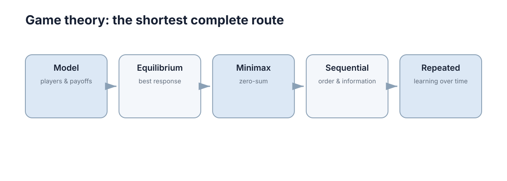

Game Theory
博弈论研究多个决策主体相互影响时各自如何选择策略，以及这些选择会收敛到什么结果。它要回答的核心问题是：当一方的收益取决于其他方的动作时，什么样的状态是“谁都无法靠单方面改变而获益”的，以及如何把这个判断写成可计算、可检验的模型。 本 Section 用五章走完这条路：先建模，再求均衡，然后依次引入零和结构、顺序与信息、重复与学习。

本节要解决的问题
博弈论不是“把优化问题换个说法”。它处理的是目标不可合并的场景：两个主体各自最小化自己的代价，而各自的代价函数里都含对方的决策。用单主体优化的语言去描述这种问题，会隐含地假设“别人不动”，从而系统性地给出错误结论。
判断一个工程问题是否需要博弈建模，看三条判据：
- 目标不可共享：不存在一个双方都认可的单一目标函数 \(J\) 可被共同最小化。
- 收益相互依赖：一方的收益必须写成 \(u_i(a_i,a_{-i})\)，显式依赖他人的动作组合 \(a_{-i}\)。
- 无强制协调者：没有中央调度器能直接指定所有人的动作并保证执行。
只要第 1、2 条同时成立，把它当成单主体优化就会出错——优化器假设别人是环境的一部分，而实际上别人也在针对你作最优选择。这就是“策略”与“噪声”的区别：噪声不会因为你改变动作而改变分布，对手会。
| 维度 | 单主体优化 | 博弈论建模 |
|---|---|---|
| 决策变量 | 一组可调变量 \(x\) | 每方各有一组动作 \(a_i\) |
| 目标 | 单个 \(J(x)\) | 每方一个 \(u_i\)，不可合并 |
| 解的概念 | 全局/局部最优 | 均衡（Nash、Minimax、子博弈完美） |
| 主要风险 | 陷入局部极小、目标写错 | 均衡不存在，或存在多个且彼此不同 |
| 典型失败模式 | 优化了错的函数 | 把耦合优化误当博弈，构造出现实中不存在的均衡 |
因此本 Section 的目标不是罗列名词，而是让读者能从“谁在和谁博弈、收益怎么定义”一路推到三层结论：均衡是否存在、是否唯一、是否高效。
这三层结论的判据不同，必须分开检查：存在性由不动点定理保证（第 2 章），唯一性取决于最佳响应映射的单调性或收益结构的凸凹性，高效性则是均衡与帕累托最优的比较。均衡稳定不等于结果好——囚徒困境里（背叛, 背叛）是唯一均衡，却帕累托劣于（合作, 合作）。把这三层混为一谈，就会产生“算出了均衡所以问题解决了”这类误判。
五章的推进逻辑
五个章节不是并列的知识点，而是一条依赖链，顺序不能随意颠倒：
- 博弈、策略与收益 定义参与者、动作、收益三要素，并区分占优策略与混合策略。没有这一步，后面的“均衡”连定义域都没有。
- 最佳响应与纳什均衡 把均衡定义为最佳响应映射的不动点，并给出存在性条件。它直接消费第 1 章的收益表。
- 零和博弈与 Minimax 处理收益严格对立 \(u_1+u_2=0\) 的特例，此时均衡可化为线性规划，且必定存在。
- 序贯博弈与贝叶斯博弈 加入时序与信息：谁先动、谁知道什么，引入逆向归纳与贝叶斯更新。
- 重复博弈与博弈中的学习 把一次性博弈铺到时间轴上，解释合作如何在没有强制力时自我维持。
跳章的代价很具体：不先懂不动点，就无法理解为什么混合策略均衡一定存在；不先懂零和结构，就看不出 Minimax 只是 Nash 的一个特例；不理解单次博弈，就解释不了重复博弈里“以牙还牙”为何能是均衡。
| 章节 | 新增结构 | 主要数学工具 | 它替读者回答的问题 |
|---|---|---|---|
| 01 博弈模型 | 参与者、动作、收益 | 收益矩阵、占优、混合策略 | 这个互动该怎么写下来？ |
| 02 最佳响应与 Nash | 最佳响应映射 | 不动点定理、支持枚举 | 谁会先停手？ |
| 03 零和与 Minimax | 收益严格对立 | 线性规划、对偶 | 最坏情况下的最优是什么？ |
| 04 序贯与贝叶斯 | 顺序、信息、类型 | 逆向归纳、贝叶斯更新 | 知道得多的一方占多少便宜？ |
| 05 重复与学习 | 时间、历史、策略更新 | 折现、Folk Theorem、收敛性 | 合作能自发维持吗？ |
概念地图
配图标题是 Game theory: the shortest complete route——它主张这五步是从零到能分析一个真实博弈的最短路线。图中的箭头单向排列，表示每一步都建立在前一步之上。逐节点看：
- Model（players & payoffs）：起点不是“策略”，而是“谁参与、各自能做什么、每个动作组合下各得多少”。收益必须写成一个可比较的数 \(u_i(a)\)，否则后面的最优性无法定义。
- Equilibrium（best response）：第二个节点把“稳定的结果”定义为所有人都已在用对他人策略的最佳响应，即 \(a_i^{*} \in \arg\max_{a_i} u_i(a_i,a_{-i}^{*})\)。这是 Nash 均衡的几何含义：没有人愿意单方面移动。
- Minimax（zero-sum）：第三个节点收窄到收益完全对立的特例。此时“稳定”等价于“最小化对手能保证施加的最大损失”，均衡值唯一，且可用线性规划直接求解。
- Sequential（order & information）：第四个节点引入时序——谁先动、谁知道什么。同样的动作集，顺序不同会得到完全不同的均衡，因此必须区分“同时”与“轮流”。
- Repeated（learning over time）：终点把一次性博弈重复，或让参与者在重复中学习。它回答的是图中最后一个、也是最有工程价值的问题：一次性博弈中的背叛，为什么在长期互动中可能被合作取代。
| 图中节点 | 英文标签 | 它在说什么 | 对应章节 |
|---|---|---|---|
| Model | players & payoffs | 先把参与者、动作集、收益函数三者写清 | 01 博弈模型 |
| Equilibrium | best response | 稳定点 = 所有人都用最佳响应，没人愿单方面改变 | 02 最佳响应与 Nash |
| Minimax | zero-sum | 收益对立时均衡化为线性规划，值唯一 | 03 零和与 Minimax |
| Sequential | order & information | 顺序与信息结构改变均衡，需逆向归纳 | 04 序贯与贝叶斯 |
| Repeated | learning over time | 时间维度让合作可自维持，也让策略收敛 | 05 重复与学习 |
把这五个节点连起来读，就是一句话：先写清收益，再找不动点，必要时收窄到零和结构，然后叠加顺序与信息，最后把一次性互动放到时间轴上。 图中标为 “shortest complete route” 正是这个意思——它不是完整的博弈论文献目录，而是从工程问题出发所需的最短闭环。
与现实系统的接口
博弈论的价值在于它能把“多主体互相影响”这类模糊描述，翻译成可以计算和检验的量。下表给出常用概念与外部章节的对接点：
| 博弈概念 | 用在哪一章 | 解决什么问题 |
|---|---|---|
| Nash 均衡 | 协调与竞争 | 解释为何各自最优化会让双方停在次优结果，识别死锁式协调失败 |
| Minimax / 零和 | 导航与控制 | 把对手视为最坏情况扰动时，设计保证最差性能界的控制律 |
| 逆向归纳 / 子博弈完美 | 04 序贯与贝叶斯 | 判断“先动”是否真带来优势，以及承诺为什么可信 |
| 混合策略 | 02 最佳响应与 Nash | 在对手可预测我方规律时，用随机化让对手无法利用 |
| 重复博弈 / 折现 | 05 重复与学习 | 推导合作在无强制协调下的可持续条件 |
| 贝叶斯博弈 | 04 序贯与贝叶斯 | 不知道对手类型时，如何用观测更新信念再选动作 |
一个具体数量关系：在单次收益为 \(T=5\)（背叛得利）、\(R=3\)（互相合作）、\(P=1\)（互相背叛）、\(S=0\)（被背叛）的囚徒困境中，若用冷酷触发策略维持合作，折现因子只需满足
也就是说当参与者对未来足够有耐心（\(\delta \ge 0.5\)）时，合作可以从均衡中自发产生。这个数字不是抽象结论——它直接告诉工程上“想让多主体长期协作，就要让单次背叛的即时收益足够小，或让关系足够长”。
建模顺序建议
五个要素的正确书写顺序是：参与者 → 动作 → 收益 → 信息 → 时序。这个顺序不是习惯，而是依赖关系决定的：后一项的定义必须引用前一项。
- 先定参与者，因为动作集是参与者的属性，没确定“谁”就无法列出“能做什么”。
- 再定动作，因为收益是动作组合的函数 \(u_i : \prod_j A_j \to \mathbb{R}\)，动作集不明确时收益连定义域都写不出。
- 再定收益，因为均衡只是这个函数上的最优性条件；收益写错，后面全部算错。
- 再定信息，因为“谁知道什么”决定要构造的是完全信息博弈还是贝叶斯博弈，它改变的是求解方法而非收益本身。
- 最后定时序，因为同时博弈用最佳响应不动点、序贯博弈用逆向归纳；次序确认后才能确定调用哪套解概念。
最常见的错误是倒着来：先想“我要一个 Nash 均衡”，再回头凑收益，结果构造出一个与现实不符、也没有现实解释的均衡。
| 顺序 | 步骤 | 必须追的问题 | 常见错误 |
|---|---|---|---|
| 1 | 参与者 | 谁的动作会影响我的收益？ | 漏掉被动的环境方，导致收益不守恒 |
| 2 | 动作集 \(A_i\) | 每方实际能选什么、有无约束？ | 用连续动作近似离散决策，均衡算错 |
| 3 | 收益 \(u_i(a)\) | 每个动作组合下各方各得多少？ | 收益与真实目标不一致，均衡不可信 |
| 4 | 信息结构 | 谁知道谁的收益与动作？ | 把不完全信息当完全信息，高估均衡可达性 |
| 5 | 时序 | 同时还是轮流、能否观察历史？ | 顺序搞反，解概念用错 |
常见误解
| 错误说法 | 为什么错 | 正确说法 |
|---|---|---|
| 博弈论适合所有多主体问题 | 单主体优化同样能处理多个变量，只有当目标不可合并时才必须用博弈 | 先检查收益是否相互依赖、目标是否可共享 |
| Nash 均衡就是最优结果 | 囚徒困境的均衡（背叛, 背叛）对双方都比（合作, 合作）更差 | 均衡是稳定性条件，帕累托最优是另一个独立概念 |
| 均衡一定存在且唯一 | 匹配硬币类博弈无纯策略均衡，协调博弈又有多个均衡 | Nash 定理只保证混合策略均衡存在，不保证唯一 |
| 混合策略就是随便随机 | 随机概率必须让对手在各纯策略之间无差异，否则会被利用 | 混合是对手无法从我方规律中获利的特定概率分布 |
| Minimax 和 Nash 是两种不同的解 | 在收益严格对立时，两者的均衡值完全重合 | 零和条件下 Minimax 是 Nash 的特例，值唯一 |
| 重复博弈只是把一次性博弈多玩几次 | 折现因子和触发策略让合作成为新均衡，机制与单次完全不同 | 时间维度引入新的均衡集合，合作需要耐心条件 |
本章导航
| 章节 | 主题 | 解决什么问题 |
|---|---|---|
| 01 博弈、策略与收益 | 三要素与分类 | 如何把一个互动写成可分析的模型 |
| 02 最佳响应与纳什均衡 | 最佳响应与不动点 | 稳定结果长什么样、是否一定存在 |
| 03 零和博弈与 Minimax | 对立收益与线性规划 | 最坏情况下如何保证最优 |
| 04 序贯博弈与贝叶斯博弈 | 顺序与信息 | 先手优势与信息优势如何量化 |
| 05 重复博弈与博弈中的学习 | 时间与学习 | 合作何时能自发维持、策略是否收敛 |
下一步：先读 博弈、策略与收益 建立三要素的书写规范，再用 最佳响应与纳什均衡 学会判定稳定性；想先看落地场景，可对照 协调与竞争 与 导航与控制。